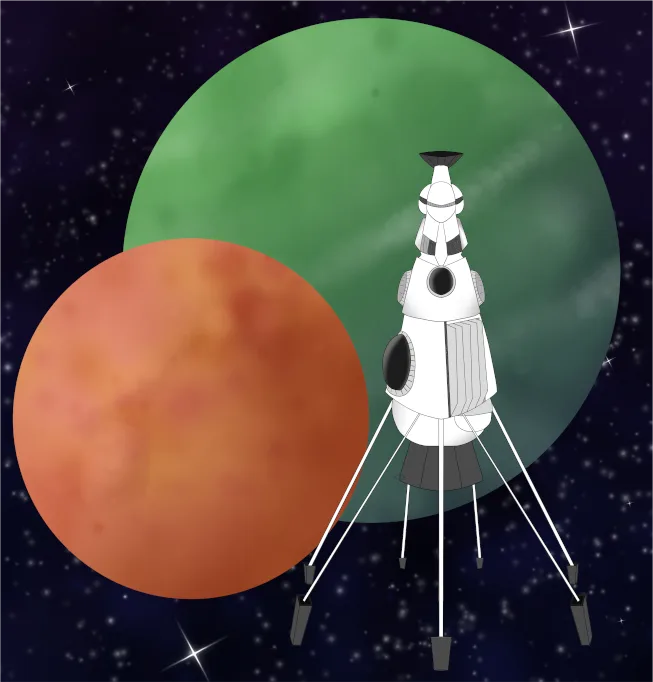

BATTLETECH
OUTWORLDS WASTES

Lightweight Narrative League and Event Framework
1
Introduction
2
Background
3
Force Construction
4
Force Management
5
Scenarios
6
Scenario Conversion
7
Instant Action
8
League Play
9
Event Play
10
Renorsal Reversal
11
Outworlds Wastes Maps
12
Sample Tracking
13
Sample Event Tracking
14
Sample Forces
15
Force BV Adjustments
16
Combat Vehicle Primer
17
References
18
Downloads